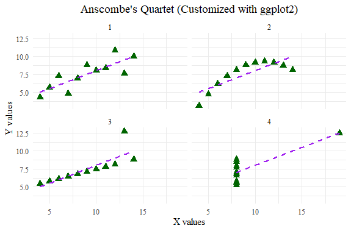

Assignment 3
1.The explaination of configuration of Pie chart at the end is:
::: {.cell}
# I selected the last Piechart
# Set graphical parameters: 'mar' changes the margins of the plot, 'xpd' controls clipping, and 'cex' changes the character size
par(mar = c(0, 2, 1, 2), xpd = FALSE, cex = 0.5)
# Create a vector representing sales proportions for different pie types
pie.sales <- c(0.12, 0.3, 0.26, 0.16, 0.04, 0.12)
# Assign names to the different sections of the pie chart (corresponding to each flavor)
names(pie.sales) <- c("Blueberry", "Cherry", "Apple", "Boston Cream", "Other", "Vanilla")
# Plot the pie chart using the 'pie' function
# 'col' specifies the colors of the pie sections, using a grayscale gradient created by 'gray()'
pie(pie.sales, col = gray(seq(0.3, 1.0, length = 6))) 2 Rerun the anscombe01.R (in tesms folder)
a. Compare the regression models.
Anscombe’s consists of four datasets that have nearly identical statistical properties (means, variances, correlations, and regressions) but show vastly different patterns when plotted. The key takeaways from comparing the four regression models are:
Identical Regressions: All four regression models have very similar (if not identical) linear regression lines in terms of slope and intercept. This demonstrates that identical statistical summaries can result from very different underlying data distributions.
Different Distributions:
Model 1 (y1 ~ x1): A standard linear relationship with data points closely clustered around the line.
Model 2 (y2 ~ x2): A slight curve in the data, indicating a non-linear relationship, but the linear regression still fits closely.
Model 3 (y3 ~ x3): A linear relationship but with one outlier, which has a significant effect on the regression.
Model 4 (y4 ~ x4): Most data points are vertically aligned with one extreme outlier. The outlier drives the slope, making the regression line a poor representation of the rest of the data.
Compare the different ways to create the plots
Colors:
In the “fancy version,” the points are colored red with a background of orange (col = “red”, bg = “orange”), and the regression lines are blue (abline(mods[[i]], col = “blue”)). You can experiment with other colors to improve clarity, like using darker or contrasting colors for better visibility.
Plot Characters (pch):
pch = 21 is used, which gives a circle with a filled background. Changing pch will modify the appearance of the points (e.g., pch = 16 for solid circles, pch = 17 for triangles).
Line Types:
You can change the appearance of the regression line by using the lty argument in abline(). For instance, lty = 2 creates a dashed line, while lty = 3 creates a dotted line.
Point Size (cex):
The size of the points is controlled using the cex parameter. In the example, it is set to 1.2, making the points slightly larger than default.
Axis Limits (xlim, ylim):
The limits of the x and y axes are controlled using the xlim and ylim arguments. In this case, xlim = c(3, 19) and ylim = c(3, 13) ensure that the axis range is consistent across all plots, allowing better comparison.
3 Can you finetune the graph without using other packages?
# Set a serif font
par(family = "serif")
# Use a 2x2 layout for the four datasets
par(mfrow = c(2, 2), oma = c(0, 0, 2, 0), mar = c(4, 4, 1, 1))
# Define custom plot settings and apply them to all four datasets
for(i in 1:4) {
# Use formula and access columns directly from 'anscombe' dataframe
formula <- as.formula(paste0("y", i, " ~ x", i))
# Plot each x and y pair using anscombe data, with custom axis labels
plot(anscombe[[paste0("x", i)]], anscombe[[paste0("y", i)]],
col = "darkgreen", pch = 17, main = paste("Dataset", i),
xlim = c(4, 20), ylim = c(4, 12),
xlab = paste("x", i), ylab = paste("y", i)) # Set custom axis labels
# Add regression line for each plot
abline(lm(formula, data = anscombe), col = "purple", lwd = 2)
}
# Add a common title
mtext("Customized Anscombe's Quartet", outer = TRUE, cex = 1.5)###4 How about with ggplot2? (Use tidyverse package)
# Load tidyverse for ggplot2 and data manipulation
library(tidyverse)
# Convert the anscombe dataset to long format
anscombe_long <- anscombe %>%
pivot_longer(cols = everything(),
names_to = c(".value", "set"),
names_pattern = "(.)(.)")
# Create the ggplot with facets for the four datasets
ggplot(anscombe_long, aes(x = x, y = y)) +
geom_point(color = "darkgreen", size = 3, shape = 17) + # Custom color and shape for points
geom_smooth(method = "lm", color = "purple", se = FALSE, linetype = "dashed") + # Regression line
facet_wrap(~ set, nrow = 2, ncol = 2) + # Create a 2x2 grid of plots
labs(title = "Anscombe's Quartet (Customized with ggplot2)",
x = "X values", y = "Y values") + # Set axis labels and title
theme_minimal() + # Apply a clean theme
theme(text = element_text(family = "serif", size = 12), # Apply a serif font
plot.title = element_text(hjust = 0.5)) # Center align the title

Prehackathon by Team: Replicate the scatterplot matrix
## Download COVID data from OWID GitHub
owidall <- read.csv("https://raw.githubusercontent.com/owid/covid-19-data/master/public/data/owid-covid-data.csv")
id-data.csv?raw=true")
# Deselect cases/rows with OWID
owidall = owidall[!grepl("^OWID", owidall$iso_code), ]
# Subset by continent: Europe
owideu = subset(owidall, continent=="Europe" & as.Date(date) < as.Date("2023-08-31") & as.Date(date) > as.Date("2020-01-01"))
selected_countries <- c("Spain", "Germany", "Italy", "Ukraine")
owideu <- subset(owideu, location %in% selected_countries)
ylim = c(0, 6000)
# font
par(family = "serif")
# y axis: retreived using chatgpt
y_ticks <- c(1000, 3000, 5000)
# plot- debugged using chatgpt
plot(x = as.Date(owideu$date), y = owideu$new_deaths, pch = 16, col = "#bf106d", xaxt = "n", yaxt = "n", ylab = "", xlab = "")
axis.Date(1, at = as.Date(owideu$date), labels = format(as.Date(owideu$date), "%Y-%m"), las = 2, cex.axis = 0.6) # X-axis
axis(2, at = y_ticks, labels = y_ticks, cex.axis = 0.6)
mtext("Date", side = 1, line = 4, cex = 1.5)
mtext("COVID Deaths in Europe (Daily)", side = 2, line = 2, las = 0, cex = 1.2)